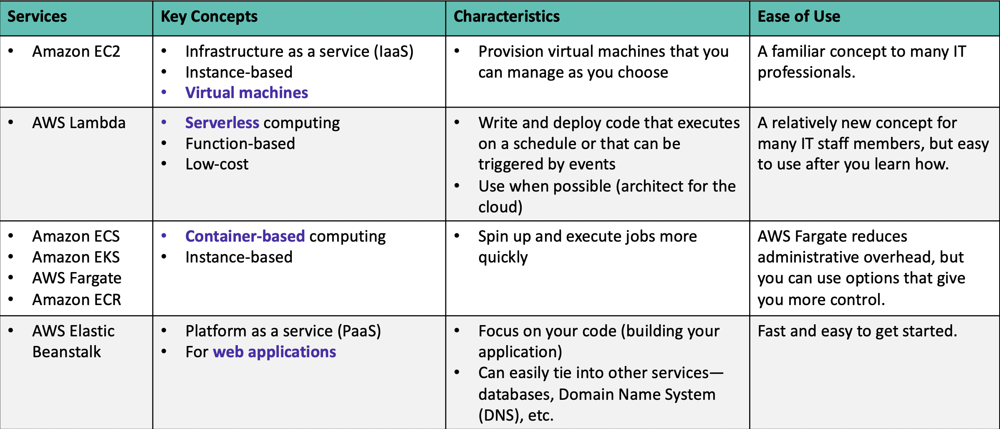
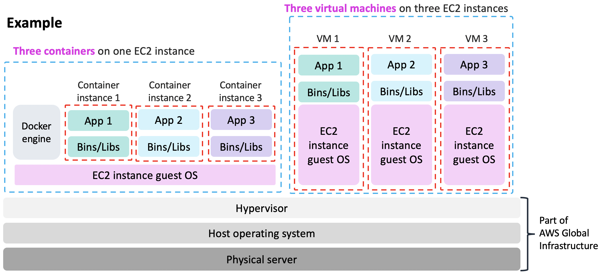
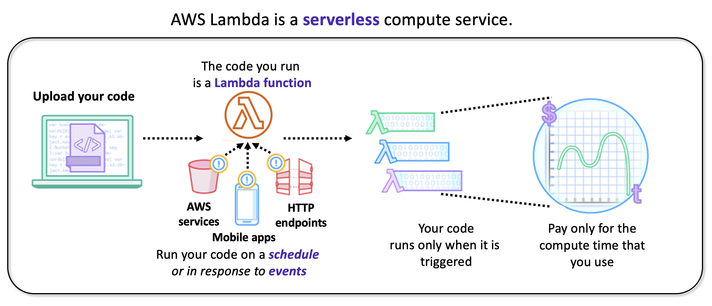

AWS学习笔记: Compute
欢迎来到我的AWS学习笔记系列。
本文着重记述关于AWS云计算服务的知识点。如若转载，请先与作者联系。
本文图片来自于网络
AWS Compute
Overview

Amazon EC2
Amazon Elastic Compute Cloud (Amazon EC2)
- Features:
- Provides virtual machines—referred to as EC2 instances—in the cloud.
- Gives you full control over the guest operating system (Windows or Linux) on each instance.
- You can launch instances of any size into an Availability Zone anywhere in the world.
- From Amazon Machine Images (AMIs)
- Control traffic to and from instances
- Launch steps:
- 1.Select an AMI
- A template used to create an EC2 instance
- Win or Linux, also some pre-installed software
- 2.Instance type
- Your choice of instance type determines RAM, CPU, Storage and Network performance.
- Types: general, computing, memory, storage, accelerated optimized
- Naming:
- Example: t3.large
- T is the family name
- 3 is the generation number
- Large is the size
- Networking features:
- Gbps varies by instance type
- To maximize networking and bandwidth, use cluster placement group or enable enhanced networking.
- 3.Network settings
- Identify the VPC and optionally the subnet.
- 4.IAM role(Optional)
- See more about IAM
- 5.User data(Optional)
- Optionally specify a user data script at instance launch
- 6.Storage option
- Root volume: Where the guest operating system is installed
- (Optional) add additional volumes
- Volume
- Size in GB
- SSDs/HDDs
- if get deleted when the instances is terminated
- if use encryption
- Storage options:
- Amazon EBS -> durable, won’t be deleted when termination
- Amazon EC2 Instance Store: Ephemeral, get deleted when stopping.
- 7.tags
- Tagging is how you can attach metadata to an EC2 instance
- 8.Security group
- A set of firewall rules that control traffic to the instance.
- Specify the port number, the protocol, the source
- 9.Key pair
- consists of a public key and private key
- For windows AMIs: Use the private key to obtain the administrator password that you need to log in to your instance
- For Linux AMIs: Use the private key to use SSH to securely connect to your instance.
- 1.Select an AMI
- Another option: Launch an EC2 instance with the AWS Command Line Interface
- Instance lifecycle
- Instance hibernation option
- Benefits: Save and reload content in the RAM
- Prerequisites:
- Certain Linux AMIS
- Must have encrypted Amazon EBS root volume
- Enable Hibernation at instance launch
- Using elastic address:
- Before using:
- Rebooting will not change ip address
- If stop and then start, the external IPv4 addr and DNS hostname will change; the internal ones won’t.
- After:
- Remains allocated until get released.
- Before using:
- EC2 instance metadata
- While you are connected to the instance, you can view it –
- In a browser: http://169.254.169.254/latest/meta-data/
- In a terminal window: curl http://169.254.169.254/latest/meta-data/
- be used to configure or manage a running instance
- While you are connected to the instance, you can view it –
- Amazon CloudWatch for monitoring
Amazon EC2 Cost Optimization
| Pricing models | On-Demand Instances | Spot Instances | Reserved Instances | Dedicated Hosts |
|---|---|---|---|---|
| Benefits | Low cost and flexibility | Large scale, dynamic workload | Predictability ensures compute capacity is available when needed | Save money on licensing costs Help meet compliance and regulatory requirements |
| Use cases | Short-term, spiky, or unpredictable workloads Application development or testing |
Applications with flexible start and end times Applications only feasible at very low compute prices Users with urgent computing needs for large amounts of additional capacity |
Steady state or predictable usage workloads Applications that require reserved capacity, including disaster recovery Users able to make upfront payments to reduce total computing costs even further |
Bring your own license (BYOL) Compliance and regulatory restrictions Usage and licensing tracking Control instance placement |
| Use cases example | Spiky Workloads | Time-Insensitive Workloads | Steady-State Workloads | Highly Sensitive Workloads |
Four pillars of cost optimization:
- 1.Right size
- Provision instances to match the need
- Use CloudWatch
- Best practice: Right size, then reserve
- 2.Increase elasticity
- Stop or hibernate Amazon EBS-backed instances that are not actively in use
- Use automatic scaling to match needs based on usage
- 3.Optimal pricing model
- Leverage the right pricing model for your use case
- Consider serverless solutions (AWS Lambda)
- 4.Optimize storage choices
- Mainly focus on EBS
Container Services
Container basics
- Containers are a method of operating system virtualization
- Benefits:
- Repeatable
- Self-contained execution environments
- Software runs the same in different environments
- Faster to launch and stop or terminate than virtual machines
Docker
- Docker is a software platform that enables you to build, test, and deploy applications quickly.
- Run containers on Docker. Containers are created from a template called an image.
- A container has everything a software application needs to run,
- which are libraries, system tools, code, runtime
Container v.s. Virtual Machines

Amazon Elastic Container Service (Amazon ECS)
- A highly scalable, fast, container management service
- Benefits:
- Orchestrates the execution of Docker containers
- Maintains and scales the fleet of nodes that run your containers
- Removes the complexity of standing up the infrastructure
- Amazon ECS cluster options
- Do you want to manage Amazon ECS cluster?
- Yes:
- create an Amazon ECS cluster backed by Amazon EC2
- No:
- create an Amazon ECS cluster backed by AWS Fargate
Kubernetes
- An open source software for container orchestration
- Deploy and manage containerized applications at scale
- Complements Docker
- Docker enables you to run multiple containers on a single OS host.
- Kubernetes orchestrates multiple Docker hosts (nodes).
Amazon Elastic Kubernetes Service(Amazon EKS)
- Enables you to run Kubernetes on AWS
- Manage clusters of Amazon EC2 compute instances
Amazon Elastic Container Registry (Amazon ECR)
- Enables you to store, manage, and deploy your Docker containers
Introduction to AWS Lambda

AWS Lambda:
- Features
- It supports multiple programming languages.
- Completely automated administration
- Built-in fault tolerance
- It supports the orchestration of multiple functions
- Pay-per-use pricing
- Event sources
- Configure other AWS services as event sources to invoke your function as shown here.
- Alternatively, invoke a Lambda function from the Lambda console, AWS SDK, or AWS CLI.
- Only execute when being triggered
- Limits
- The maximum memory allocation for a single Lambda function is 3,008 MB.
- The maximum execution time for a Lambda function is 15 minutes.
Introduction to AWS Elastic Beanstalk
AWS Elastic Beanstalk
- An easy way to get web applications up and running
- A managed service that automatically handles –
- Infrastructure provisioning and configuration
- Deployment
- Load balancing
- Automatic scaling
- Health monitoring
- Analysis and debugging
- Logging
- No additional charge for Elastic Beanstalk
- Pay only for the underlying resources that are used
- It supports web applications written for common platforms
- Java, .NET, PHP, Node.js, Python, Ruby, Go, and Docker
- You upload your code and Elastic Beanstalk automatically handles the deployment